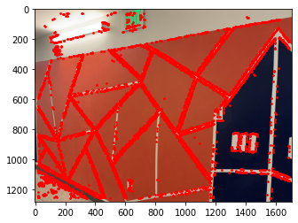

To morph one face to another, I need to label the corresponding points on both faces with the same order. I use a tool developed by another student in the previous semester to label them and obtain a correspondences JSON file.
Some pictures I take are in a house, inside MLK building, and in Evans 939.
Inside a house.Inside a house.
Inside MLK building.Inside MLK building.
Inside MLK building.Inside MLK building.
Inside Evans 939.Inside Evans 939.
Recover Homographies
Recovering homography is a math problem. We need to solve the equation
\( Hx = x' \), where
\( x = (x_1, x_2)\) is the point in the source image,
\( x'= (x_1', x_2') \) is the point in the target image, and
\( H \) is the homography matrix.
\[
\begin{bmatrix}
a & b & c \\
d & e & f \\
g & h & 1
\end{bmatrix}
\begin{bmatrix}
x_1 \\
x_2 \\
1
\end{bmatrix}
=
\begin{bmatrix}
w x_1' \\
w x_2' \\
w
\end{bmatrix}
\]
This gives us:
\[
\begin{align*}
a x_1 + b x_2 + c &= w x_1' \\
d x_1 + e x_2 + f &= w x_2' \\
g x_1 + h x_2 + 1 &= w
\end{align*}
\]
Now substituting \( w \) into the first two equations gives:
\[
\begin{align*}
a x_1 + b x_2 + c &= (g x_1 + h x_2 + 1) x_1' \\
d x_1 + e x_2 + f &= (g x_1 + h x_2 + 1) x_2'
\end{align*}
\]
We now have a clean expression of \( x_1' \) and \( x_2' \):
\[
\begin{align*}
a x_1 + b x_2 + c - g x_1 x_1' - h x_2 x_1' &= x_1' \\
d x_1 + e x_2 + f - g x_1 x_2' - h x_2 x_2' &= x_2'
\end{align*}
\]
Putting it all together:
\[
\begin{bmatrix}
x_1 & x_2 & 1 & 0 & 0 & 0 & -x_1 x_1' & -x_2 x_1' \\
0 & 0 & 0 & x_1 & x_2 & 1 & -x_1 x_2' & -x_2 x_2'
\end{bmatrix}
\begin{bmatrix}
a \\
b \\
c \\
d \\
e \\
f \\
g \\
h
\end{bmatrix}
=
\begin{bmatrix}
x_1' \\
x_2'
\end{bmatrix}
\]
When we have more than two points, we simply expand the matrix:
\[
\begin{bmatrix}
x_1 & x_2 & 1 & 0 & 0 & 0 & -x_1 x_1' & -x_2 x_1' \\
0 & 0 & 0 & x_1 & x_2 & 1 & -x_1 x_2' & -x_2 x_2' \\
\vdots & \vdots & \vdots & \vdots & \vdots & \vdots & \vdots & \vdots
\end{bmatrix}
\begin{bmatrix}
a \\
b \\
c \\
d \\
e \\
f \\
g \\
h
\end{bmatrix}
=
\begin{bmatrix}
x_1' \\
x_2' \\
\vdots
\end{bmatrix}
\]
To solve this equation, we can use the least squares method to find the best homography matrix that minimizes the error when we have more than four correspondences. When it is exactly four correspondences, we can solve the equation directly.
Warping Images
After recovering the homography matrix, we can warp the source image to the target image. The process is similar to warping triangles in the Blending project. We modify that procedure into:
Create a grid of coordinates in the output image space using np.meshgrid
Apply the inverse homography to get the corresponding source coordinates (x, y)
Interpolation
Fill the warped image with values from the source image
Image Rectification
Rectification comes directly from warped image. The corresponding points will be directly four corners of the wanted image. I made a blank image of all black for warping purpose. Some croppings will be helpful to get the main picture we want.
Rectification of the bookcover of Crime and Punishment
Original bookcover of *Crime and Punishment* before rectification.Rectified bookcover of *Crime and Punishment*.Cropped bookcover of *Crime and Punishment*.
Rectification of the nutritionn fact of a snack
A snackRectified nutrition fact of a snack.
Blend the images into a mosaic
I first warp the source image to the target image with the warpImage function. Then I pad the target image with zeros to make space for the source image. At the end, I blend the two images by two band blending with a mask computed from distance transform.
The following are the results of blending two images into a mosaic inside a house.
The left The right
Mosaic
Inside the hallway of MLK building
The leftThe right
Mosaic
A nearby position inside MLK building
The leftThe right
Mosaic
Inside Evans 939
The leftThe right
Mosaic
Part B: Feature Matching for Autostitching
Harris Interest Point Detector
I used the provided harris.py to find all harris corners. I selected the the first 5000 Harris corners to be displayed otherwise there will be 40000 corners for this image.
The original image.

With 5000 Harris corners. With all Harris corners.
Adaptive Non-Maximal Suppression (ANMS)
With Harris corner detection, we get corners but there are too many corners. A lot of Harris corners contain redudant information. We can apply Adaptive Non-Maximal Suppression (ANMS) to suppress any point based on their corner strength. We use KDTree to find the nearest neighbors instead of using L2 distances to every point for finding nearest neighbbors, which would be very slow and memory-comsuming. We will need to build a n*n matrix where n is the number of corners passed in.
Initialize a list size n of radius to infinity, n=number of corners
Build a KDTree with the corners
For each corner i:
Find neighbors within the current radius
Increase radius until at least one neighbor is found or radius exceeds a maximum limit
Filter neighbors to keep only those with higher strength by threshold factor
If there are stronger neighbors, compute the minimum distance to them
Top 500 ANMS corners.
Extracting Feature Descriptor
I use the technique of finding matching descriptor described in the paper to find them. We sample a 40*40 patch of pixels around the keypoint(corner) points and them resize the patch to be 8*8 by skimage.transform.resize (spacing of 5 pixels). Here are 25 corners and they look nice as they point out the corners.
Feature descriptor.
Matching Feature Descriptors
Now we have found the feature descriptors from both images, we want to know their correspondences. We rely on the ratio between the first and the second nearest neighbors (Lowe's ratio). Here is a pseudocode:
Compute pairwise differences using broadcasting
Calculate the sum of squared differences between each pair of features
Sort SSD within each row and get the indices of the sorted values
Calculate Lowe's ratio for each feature
Pair nearest neighbor indices with corresponding features in features1
Extract final matches that pass the Lowe's threshold
Matching feature descriptors.
RANSAC
Now we have seen different macthes but not all matches are good. We can use RANSAC find the best homography matrix. The RANSAC algorithm essensilly samples four random matches and then construct a homography and determine if that homography is a good fit for other points by computing the euclident distance bween the warpped coordinates to their corresponding coordinates. We use certain thresholds to count the number of inliers and update the best homography. A pseudocode will be:
For i in range(num_iterations):
Randomly sample 4 matches and compute homography
Warp the coordinates of the first image for the points in matches(matched points computed in the previous step)
Compute the Euclidean distance between the warped coordinates and the corresponding points in the second image
Count the number of inliers
If the number of inliers is greater than the best number of inliers:
Update the best number of inliers
Update the best homography
RANSAC.
Autostitching
RANSAC will gives us a nice groupd of inliers that we can compute homography. With the homography matrix, we can stitch the two images together.
Left image. Right image.
Manual labeled mosaic image.
Autostitched image.
Left image. Right image.
Manual labeled mosaic image.
Autostitched image.
These are photoed in Evans 939. The Go Club @Berkeley is having its weekly meeting to play Go(围棋)
Left image. Right image.
Manual labeled mosaic image.
Autostitched image.
What Have I Learned
In part A, I learn to warp images, though the process is similar to warping triangles in face morphing.
In part B, I have learned how to use Harris corner detector, ANMS, feature descriptor, matching feature descriptor, and RANSAC to stitch two images together. Each algorithm does a certain job well and combining them into a pipeline allows me to generate a mosaic automatically. I think it is very cool to see everything works out nicely. I really appreciate computer scientists who came up with these ideas.